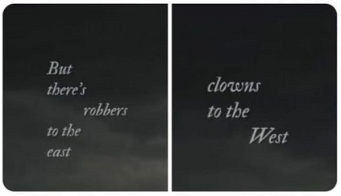

Our coming-of-age has come and gone
Suddenly the summer, it's clear
I never had the courage of my convictions
As long as danger is near
And it's just around the corner, darling
'Cause it lives in me
No, I could never give you peace
But I'm a fire and I'll keep your brittle heart warm
If your cascade ocean wave blues come
All these people think love's for show
But I would die for you in secret
The devil's in the details, but you got a friend in me
Would it be enough if I could never give you peace?
Your integrity makes me seem small
You paint dreamscapes on the wall
I talk shit with my friends
It's like I'm wasting your honor
And you know that I'd swing with you for the fences
Sit with you in the trenches
Give you my wild, give you a child
Give you the silence that only comes when two people understand each other
Family that I chose now that I see your brother as my brother
Is it enough?
'Cause there's robbers to the east, clowns to the West
I'd give you my sunshine, give you my best
But the rain is always gonna come if you're standing with me
But I'm a fire and I'll keep your brittle heart warm
If your cascade ocean wave blues come
All these people think love's for show
But I would die for you in secret
The devil's in the details, but you got a friend in me
Would it be enough if I could never give you peace?
Would it be enough if I could never give you peace?
Would it be enough if I could never give you peace?